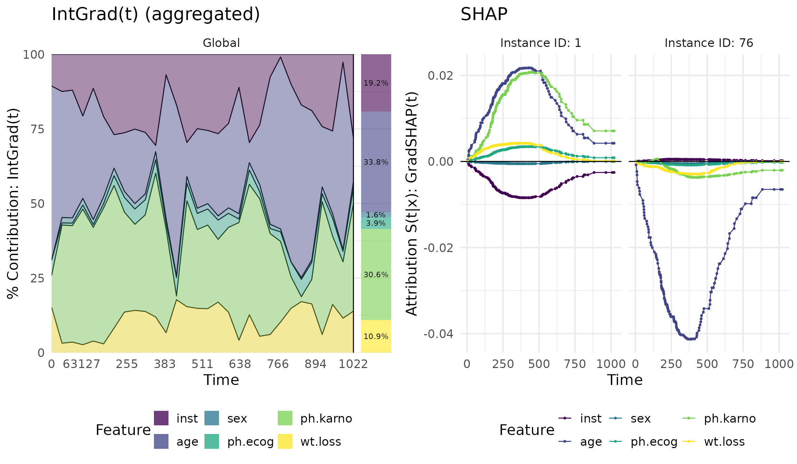

How to load my model?
how_to_load_model.RmdThe Survinng package is designed in a flexible way to
allow users to load models trained in R or Python using
survivalmodels or pycox, respectively. Under
the hood, the package uses the torch package and any base
neural network can be loaded and will be coverted to the corresponding
survival model, e.g., a DeepHit, DeepSurv, or CoxTime survival
model.
Load a base torch model
This is the simplest way to load a model. The model must be a
torch::nn_module and any input (tabular, image, multimodal,
etc.) can be passed as long as the output dimension fits the expected
survival deep learning architecture. This means:
- For a DeepHit model, the output dimension must be
of shape
(batch_size, n_risks, n_time_bins)wheren_risksis the number of competing risks andn_time_binsthe number of time bins. - For a DeepSurv and CoxTime models,
the output dimension must be of shape
(batch_size, 1), since both models are designed to predict the risk of a single event and are Cox-based.
Example DeepHit model
In this example, we will create a simple DeepHit model using the
torch package. The model will have 5 competing risks and 20
time bins. The input dimension will be 10 features. The model will be a
simple feedforward neural network with two hidden layers. Important to
note is that the output dimension is reshaped to
(batch_size, n_risks, n_time_bins).
library(torch)
n_risks <- 5
n_time_bins <- 20
n_features <- 10
# Create the base model and data
base_model_deephit <- nn_module(
initialize = function() {
self$net <- nn_sequential(
nn_linear(n_features, 128),
nn_relu(),
nn_linear(128, n_risks * n_time_bins)
)
},
forward = function(x) {
self$net(x) %>%
torch_reshape(c(-1, n_risks, n_time_bins))
}
)
model_deephit <- base_model_deephit()
data <- torch_randn(50, n_features)
time_bins <- seq(0, 10, length.out = n_time_bins)
# Check output
output <- model_deephit(data)
print(output$shape)
#> [1] 50 5 20Now, we have our (untrained) base model and corresponding data. The
next step is to create a Survinng explainer object. This is
done using the explain() function. The function takes the
model, data, and time bins (required for a DeepHit model) as input and
internally combines the base model with the DeepHit architecture. The
model_type argument is set to "deephit" to
indicate that the model is a DeepHit model. The function will return an
explainer object which can be used to compute all implemented
gradient-based feature attribution methods in the survival context.
# Create explainer object
exp_deephit <- Survinng::explain(model_deephit, data = data, model_type = "deephit",
time_bins = time_bins)
print(exp_deephit)
#> Explainer for DeepHit model
#> -----------------------------------
#> Model Class: DeepHit
#> Number of instances in the input data: 50
#> Competing risks: Not specified
#> Number of time bins in the model: 20
#> Model parameters:
#> - Number of input modalities: 1
#> - Number of features: 10
#> - Preprocessing function applied: Yes
#>
#> Features (first 5 shown):
#> X1, X2, X3, X4, X5
#> -----------------------------------
#> To see more details, explore the individual elements of the object.
# Calculate gradients
grad <- surv_grad(exp_deephit, instance = c(1,3))
# Plot gradients
plot(grad)
Example DeepSurv model
In this example, we will create a simple DeepSurv model using the
torch package. Since DeepSurv is a Cox-based model, the
output dimension will be of shape (batch_size, 1) and we
need the baseline hazard function.
library(torch)
n_features <- 10
# Create baseline hazard function (50 time points)
time <- seq(0, 10, length.out = 50)
hazard <- exp(-(time - 5)^2 / 5)
base_hazard <- data.frame(time = time, hazard = hazard)
# Create the base model and data
base_model_deepsurv <- nn_module(
initialize = function() {
self$net <- nn_sequential(
nn_linear(n_features, 128),
nn_relu(),
nn_linear(128, 1, bias = FALSE)
)
},
forward = function(x) {
self$net(x)
}
)
model_deepsurv <- base_model_deepsurv()
data <- torch_randn(50, n_features)
# Check output
output <- model_deepsurv(data)
print(output$shape)
#> [1] 50 1Now, we have our (untrained) base model and corresponding data,
including the baseline hazard values The next step is to create a
Survinng explainer object. This is done using the
explain() function. The function takes the model, data, and
baseline hazard (required for a DeepSurv model) as input and internally
combines the base model with the DeepSurv architecture. The
model_type argument is set to "deepsurv" to
indicate that the model is a DeepSurv model.
# Create explainer object
exp_deepsurv <- Survinng::explain(model_deepsurv, data = data,
model_type = "deepsurv",
baseline_hazard = base_hazard)
print(exp_deepsurv)
#> Explainer for DeepSurv model
#> -----------------------------------
#> Model Class: DeepSurv
#> Number of instances in the input data: 50
#> Number of timepoints in the model: 50 (min: 0 , max: 10 )
#> Model parameters:
#> - Number of input modalities: 1
#> - Number of features: 10
#> - Baseline hazard function: Yes
#> - Preprocessing function applied: Yes
#>
#> Features (first 5 shown):
#> X1, X2, X3, X4, X5
#> -----------------------------------
#> To see more details, explore the individual elements of the object.
# Calculate IntGrad(t)
ig <- surv_intgrad(exp_deepsurv, instance = c(1,3))
# Show results as a contribution plot
plot(ig, type = "contr")
Example CoxTime model
In this example, we will create a simple CoxTime model using the
torch package. It is very similar to the DeepSurv modelm
i.e., the output dimension of the base model will be of shape
(batch_size, 1) and we need the baseline hazard function
since it is a Cox-based model. However, the time points are integrated
to the input features, so the model will have
n_features + 1 input features. Currently, the default
function for adding the time points to the input features is the
following one and assumes tabular data:
n_features <- 10
x <- torch_randn(50, n_features)
t <- torch_linspace(0, 10, steps = 50)
preprocess_fun <- function(x) {
batch_size <- x$size(1)
# Input (batch_size, n_features) -> (batch_size * t, n_features) (replicate each row t times)
res <- x$repeat_interleave(length(t), dim = 1)
# Add time to input
time <- torch_vstack(replicate(batch_size, t$unsqueeze(-1)))
# Combine both and return
torch::torch_cat(list(res, time), dim = -1)
}
# Input shape
print(x$shape)
#> [1] 50 10
# Shape after preprocessing
preprocess_fun(x)$shape
#> [1] 2500 11However, you can pass your own preprocessing function to the
explain() function using the preprocess_fun
argument, but this option is still experimental and not fully
tested.
In the following code, we create the base model and data for the CoxTime architecture. The model will have 10 + 1 features and 50 time points for the baseline hazard function (this is basically the same as the DeepSurv model from this Section):
library(torch)
n_features <- 10
# Create baseline hazard function (50 time points)
time <- seq(0, 10, length.out = 50)
hazard <- exp(-(time - 5)^2 / 5)
base_hazard <- data.frame(time = time, hazard = hazard)
# Create the base model and data
base_model_coxtime <- nn_module(
initialize = function() {
self$net <- nn_sequential(
nn_linear(n_features + 1, 128),
nn_relu(),
nn_linear(128, 1, bias = FALSE)
)
},
forward = function(x) {
self$net(x)
}
)
model_coxtime <- base_model_coxtime()
data <- torch_randn(50, n_features)
# Check output
output <- model_coxtime(preprocess_fun(data))
print(output$shape) # the instances are replicated t times
#> [1] 2500 1Now, we have our (untrained) base model and corresponding data,
including the baseline hazard values. The next step is to create a
Survinng explainer object. This is done using the
explain() function. The function takes the model, data, and
baseline hazard (required for a CoxTime model) as input and internally
combines the base model with the CoxTime architecture. The
model_type argument is set to "coxtime" to
indicate that the model is a CoxTime model. The
preprocess_fun argument is set to the function we defined
earlier to add the time points to the input features.
# Create explainer object
exp_coxtime <- Survinng::explain(model_coxtime, data = data,
model_type = "coxtime",
baseline_hazard = base_hazard)
print(exp_coxtime)
#> Explainer for CoxTime model
#> -----------------------------------
#> Model Class: CoxTime
#> Number of instances in the input data: 50
#> Number of timepoints in the model: 50
#> Model parameters:
#> - Number of input modalities: 1
#> - Number of features: 10
#> - Baseline hazard function: Yes
#> - Preprocessing function applied: Yes
#>
#> Features (first 5 shown):
#> X1, X2, X3, X4, X5
#> -----------------------------------
#> To see more details, explore the individual elements of the object.
# Calculate IntGrad(t)
ig <- surv_intgrad(exp_coxtime, instance = c(1,3))
# Show results as a contribution plot
plot(ig, type = "contr")
Load a survivalmodels model
The survivalmodels package is a R package for survival
analysis using deep learning. Especially for the deep learning models,
it uses the pycox package in Python under the hood via
reticulate. The Survinng package is designed
to load models trained in survivalmodels directly. However,
there are some issues when torch in R (i.e.,
LibTorch) and Pytorch in Python are loaded in
the same session (see issue #815).
Therefore, we keep the training procedure using
survivalmodels in a separate session using
callr.
In the following example, we will train a default DeepHit, DeepSurv
and Coxtime model using the survivalmodels package. The
models will be trained on the lung dataset from the
survival package.
library(survival)
library(callr)
# Load lung dataset
data(cancer, package = "survival")
data <- na.omit(cancer[, c(1, 4, 5, 6, 7, 10, 2, 3)])
# Train models in separate session
models <- callr::r(function(data) {
library(survivalmodels)
library(survival)
# Set seed for reproducibility
set.seed(42)
set_seed(42)
# Make sure pycox is installed
install_pycox(install_torch = TRUE)
# Fit the DeepSurv model
fit_deepsurv <- deepsurv(Surv(time, status) ~ ., data = data, epochs = 10,
num_nodes = 8L)
# Fit the DeepHit model
fit_deephit <- deephit(Surv(time, status) ~ ., data = data, epochs = 10,
cuts = 30, num_nodes = 8L)
# Fit the CoxTime model
fit_coxtime <- coxtime(Surv(time, status) ~ ., data = data, epochs = 10,
num_nodes = 8L)
# Extract the models using `Survinng`
ext_deepsurv <- Survinng::extract_model(fit_deepsurv)
ext_deephit <- Survinng::extract_model(fit_deephit)
ext_coxtime <- Survinng::extract_model(fit_coxtime)
# Return the extracted models
list(deepsurv = ext_deepsurv, deephit = ext_deephit, coxtime = ext_coxtime)
}, args = list(data = data))Now, we have our trained models in the models list. The
models are extracted using the extract_model() function
from the Survinng package. These objects and the data to be
explained can be passed to the explain() function to create
the Survinng explainer objects.
# Create explainer objects
exp_deepsurv <- Survinng::explain(models$deepsurv, data = data)
exp_deephit <- Survinng::explain(models$deephit, data = data)
exp_coxtime <- Survinng::explain(models$coxtime, data = data)The explain() function will automatically detect the
model type and create the corresponding explainer object, i.e., the
model_type argument is not needed in this case. Using the
explainer objects, we can compute the gradient-based feature attribution
methods. The instance argument is used to specify the
instances for which the explanations should be computed.
# Show instances to be explained
ids <- c(1, 76)
data[ids, ]
#> inst age sex ph.ecog ph.karno wt.loss time status
#> 2 3 68 1 0 90 15 455 2
#> 83 11 42 1 1 80 8 196 1
# Calculate feature attribution methods
grad <- surv_grad(exp_deepsurv, instance = ids)
ig <- surv_intgrad(exp_deephit, instance = ids)
shap <- surv_gradSHAP(exp_coxtime, instance = ids)
# Show the predictions
plot(shap, type = "pred")
With the plot() function, we can visualize the results.
The type argument can be set to "pred" to show
the predictions of the model, "attr" to show the feature
attribution values, or "contr" to show the contribution
plots.
library(cowplot)
library(ggplot2)
plot_grid(
plot(ig, type = "contr", aggregate = TRUE) + ggtitle("IntGrad(t) (aggregated)"),
plot(shap, type = "attr") + ggtitle("SHAP"),
ncol = 2
)
Load a pycox Python model
It is also possible to load models trained in Python using the
pycox package. Basically, it is the same procedure as for
another torch::nn_module
model. The only difference is that the model needs to be loaded in R
as described in the Pyton to R
article for the torch package. This means, the model
architecture must be rebuilt in R and the weights and parameters must be
loaded from the Python model.
For illustration, we will use the same CoxTime model from the
pycox Jupyter notebook here
on the METABRIC dataset. After training the model, follow these steps to
extract the base hazard function and the model weights
(model and x_test are defined as in the
mentioned notebook):
import pandas as pd
# We use only a sample of the data for the baseline hazard
base_hazard = model.compute_baseline_hazards(sample = 200)
# Save base hazard as csv
pd_base_hazard = pd.DataFrame({
'time': base_hazard.index.to_numpy(),
'hazard': base_hazard.to_numpy()})
pd_base_hazard.to_csv('base_hazard.csv', index = False)
# Save model weights (not the whole model!)
torch.save(model.net.net.state_dict(), 'model.pt')
# Save data to be explained
df_train.to_csv('df_train.csv', index=False)
pd.DataFrame(x_val, columns = df_val.columns[0:9]).to_csv('x_val.csv', index=False)Now, the tricky part is rebuilding the model architecture in R with the same names and parameters as in the Python model. This is done in the following code:
# Rebuild a dense layer
BaseMLP_dense <- nn_module(
initialize = function(in_feat, out_feat) {
self$linear <- nn_linear(in_feat, out_feat)
self$batch_norm <- nn_batch_norm1d(out_feat)
},
forward = function(x) {
x <- self$linear(x)
x <- nn_relu()(x)
x <- self$batch_norm(x)
}
)
# Rebuild the whole model
BaseMLP <- torch::nn_module(
classname = "BaseMLP",
initialize = function() {
self$net <- nn_sequential(
BaseMLP_dense(10, 32),
BaseMLP_dense(32, 32),
nn_linear(32, 1, bias = FALSE)
)
},
forward = function(x) {
if (is.list(x)) x <- x[[1]]
self$net(x)
}
)
# Create model and load state dict
model <- BaseMLP()
state_dict <- load_state_dict(here("vignettes/articles/how_to_load_model/model.pt"))
model$load_state_dict(state_dict)
model$eval()
print(model)
#> An `nn_module` containing 1,568 parameters.
#>
#> ── Modules ─────────────────────────────────────────────────────────────────────
#> • net: <nn_sequential> #1,568 parametersThe model architecture is now rebuilt in R and the weights are loaded
from the Python model. The next step is to load the baseline hazard
function and the data to be explained. Additionally, since in the
notebook uses a label transformation, we need to rebuild the
transformation function in R. However, this is a simple mean and
standard deviation transformation, so we can use the
labtrans argument in the explain() function to
define the transformation function. The labtrans argument
is a list with two functions: transform and
transform_inv.
# Load base hazard and data
base_hazard <- read.csv(here("vignettes/articles/how_to_load_model/base_hazard.csv"))
df_train <- read.csv(here("vignettes/articles/how_to_load_model/df_train.csv"))
x_val <- read.csv(here("vignettes/articles/how_to_load_model/x_val.csv"))
# Rebuild the label transformation
mean <- mean(df_train$duration)
sd <- sd(df_train$duration)
labtrans <- list(
transform = function(x) (x - mean) / sd,
transform_inv = function(x) x * sd + mean
)Now, we can create the Survinng explainer object using
the explain() function and apply all implemented
gradient-based feature attribution methods on this model. The
model_type argument is set to "coxtime" to
indicate that the model is a CoxTime model and the labtrans
argument is set to the defined transformation.
# Create explainer
explainer <- Survinng::explain(model, data = x_val, model_type = "coxtime",
baseline_hazard = base_hazard,
labtrans = labtrans)
# Calculate GradSHAP(t)
grad_shap <- surv_gradSHAP(explainer, instance = c(1, 3))
# Show predictions
p1 <- plot(grad_shap, type = "pred")
# Show attribution results
p2 <- plot(grad_shap, type = "attr", add_comp = c("pred_diff"))
# Show contribution percentages
p3 <- plot(grad_shap, type = "contr")
cowplot::plot_grid(p1, p2, p3, ncol = 1)
In a similar way, you can also load DeepSurv and DeepHit models from
pycox. The only difference is that the model architecture
must be changed accordingly. The model_type argument is set
to "deepsurv" or "deephit" to indicate the
model type.